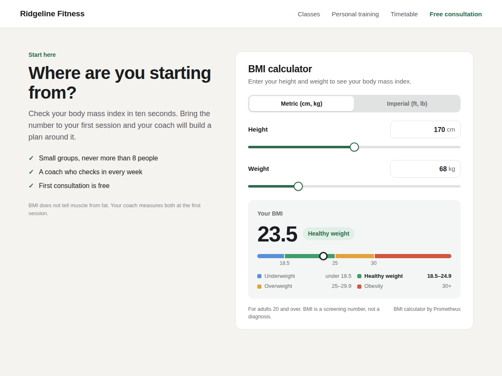

BMI Calculator
BMI calculator: body mass index on any page
- BMI and weight category, live as they type
- Metric or imperial, sliders or typed numbers
- Your colours and font, fits phone screens
- Healthy weight range and body fat estimate

What it does
A visitor who knows their own number has a reason to read on. BMI Calculator puts a body mass index calculator on any page of your site: height and weight, each with a slider and a box to type in, and the result changes as they move.
The BMI shows as a big number with its category (underweight, healthy weight, overweight or obesity) and a marker on a colour scale, so a visitor sees at once where they stand. Metric and imperial both work (feet, inches and pounds), and you decide whether visitors may switch. It suits gyms, personal trainers, nutritionists, clinics and weight-loss coaches.
In the editor's Settings panel you set the units, the starting height and weight, the title and small print, the decimal mark, colours and font. It works with zero setup and fits narrow phone screens. Nothing a visitor types is sent anywhere or stored, and the script is small and loads after your page.
Premium adds the healthy weight range for the visitor's height and how far they are from it, a body fat estimate from three tape measurements (the US Navy method), and a button to your own page, such as Book a consultation. Premium also removes the small credit line under the calculator.
Price
Free
- Full BMI calculator with sliders
- Colour scale with weight category
- Metric and imperial units
- Your colours, font and title
Premium
$5/month, $48/year ($4/month billed yearly)
- Healthy weight range for the height
- Body fat estimate (tape measure)
- Button to your own page
- No credit line under the calculator